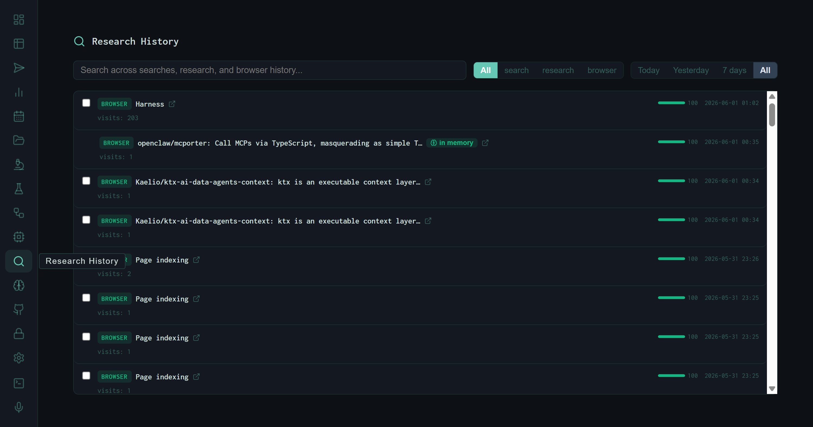
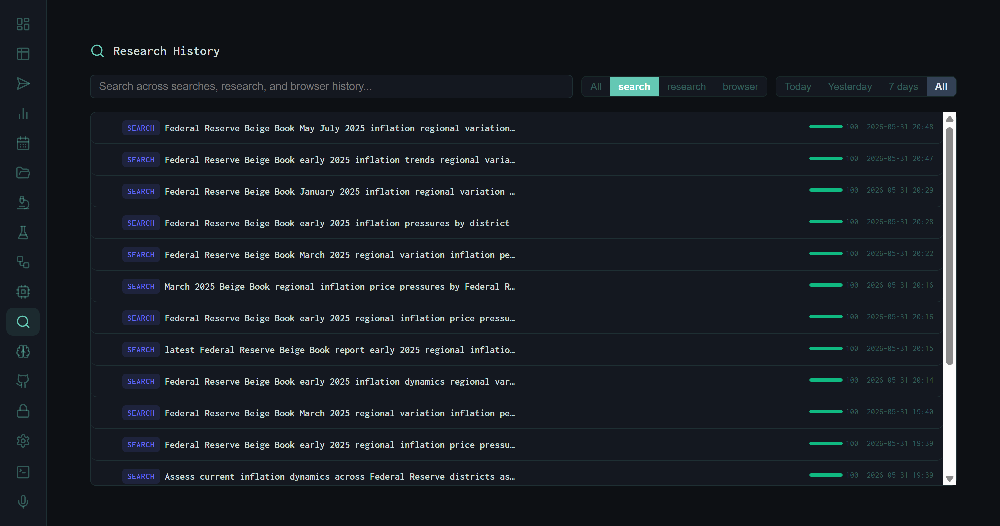
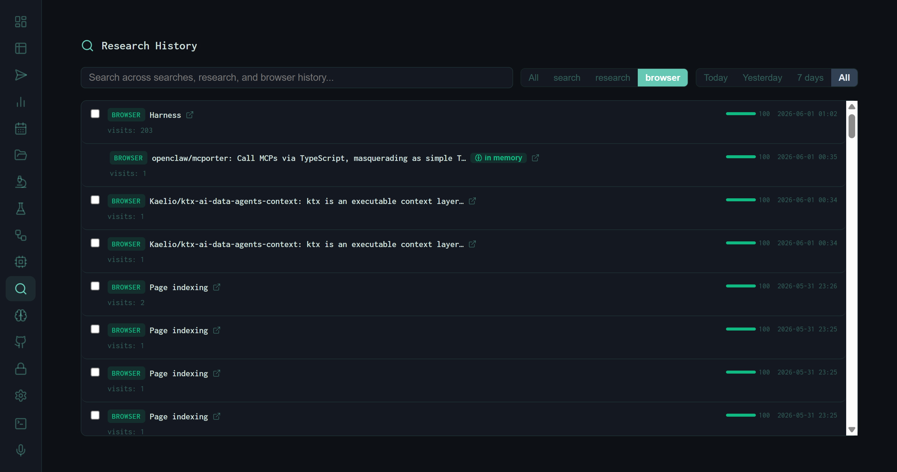
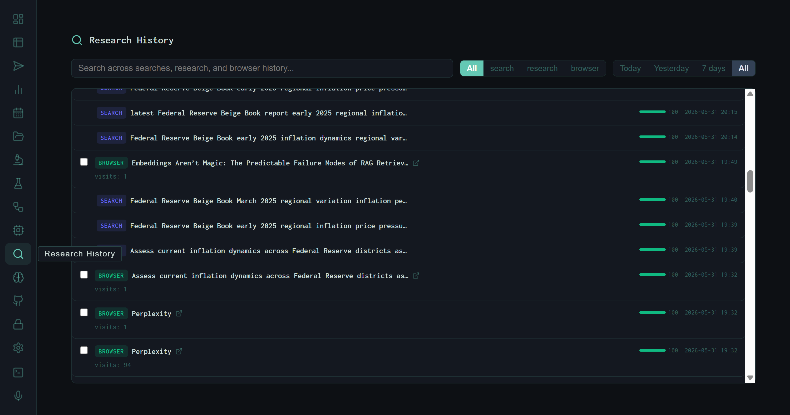

The Research History View: A Unified Activity Log
Every search query the harness fires, every URL the browser skill visits, every research output it produces — all land in a single reverse-chronological feed. The Research History view makes that feed navigable: filtered by activity type, scoped to any time window, searchable by content, and linked directly into the Memory store where observations persist.
Agentic systems are opaque by default. You submit a task, something happens across several tool calls, and you get an output. What searched where, what URLs were fetched, which queries were reformulated — none of that is visible unless you instrument for it. The Research History view is that instrumentation surfaced as a UI: a complete, unified record of every action the harness takes during research.
View search hint: "Search across searches, research, and browser history…" — three distinct activity streams, one box.
The Unified Timeline

The default view: all activity types in reverse-chronological order. Each entry carries a type badge, title, visit count (for browser entries), a score bar, and timestamp. The green "in memory" pill links directly to the corresponding Memory store entry.
The feed is chronological by default, newest first. Three types of entries appear inline:
browser
Every URL the browser skill visited: page title, full URL link, visit count (how many times across all runs), a score bar, and timestamp. The checkbox enables batch export or deletion.
search
Every web search query the harness executed. The full query string is shown verbatim — no truncation unless the query is very long. No URL, because searches are queries not destinations.
research
Research task outputs that produced a memory entry. These represent completed synthesis runs, linked to the observation in the Memory store via the "in memory" pill.
Anatomy of an Entry
Filtering by Type
The filter bar at the top narrows the feed to a single activity type. The search filter is particularly revealing — it shows every query the harness generated during retrieval, in the order they were executed.

Filtered to search only. The sequence of Beige Book queries from the perplexity-vs-harness experiment is visible in full: each reformulation of the task string as the retrieval strategy evolved across eight iterations.
The query sequence visible here is the exact retrieval trace from the perplexity-vs-harness experiment: starting from the full task string, narrowing to district-specific Beige Book queries, then reformulating for price-specific sub-queries as the multi-query retrieval strategy was introduced in v6. The history makes the evolution of the retrieval approach legible without reading code.

Filtered to browser only. Visit counts accumulate across all runs — the harness dashboard itself has 203 visits; Perplexity.ai has 94; GitHub has 90. The "in memory" pill on the openclaw/mcporter entry indicates this browse produced a persistent memory observation.
Time Window Filters
Four time scopes sit alongside the type filters: Today, Yesterday, 7 days, and All. These are the most useful for operational use: switching to Today before a new experiment run shows exactly what context already exists from earlier that day, so you don't duplicate searches the harness has already performed.
Practical pattern: Before starting a long research run, filter to Today + search. If the harness already queried the same domain earlier in the day, the results are already in context — submit a more specific follow-up task instead of repeating the same retrieval sweep.
The "In Memory" Link
The green in memory pill that appears on select entries is the connective tissue between the activity log and the persistent knowledge store. When the harness completes a research task that produces a memory observation, both records are created: the activity log entry (ephemeral timeline) and the Memory store entry (persistent, RLHF-rated). The pill links the two.
This matters because the activity log and the memory store serve different purposes. The activity log answers "what did the harness do and when?" The memory store answers "what did the harness learn, and is it reliable?" The "in memory" link lets you start from a specific browse or research event in the timeline and immediately inspect the quality-rated observation that came out of it.
The Mixed View

The mixed All view with both search and browser entries interleaved. The Perplexity browser visits appear adjacent to the Beige Book queries they preceded — the timeline reconstructs the actual sequence of actions during the experiment session.
The mixed view is the most informative for post-run review. Because browser visits and search queries are timestamped to the minute and displayed together, the timeline reconstructs what actually happened during a run: the query that opened a research thread, the URLs that were fetched to answer it, and the queries that followed as the model reformulated based on what it found. That sequence is not visible anywhere else in the dashboard.
What It Enables
Retrieval archaeology
Filter to search, set time to All, and search a domain keyword. The full query history for that domain surfaces — every reformulation, every sub-query variant, in chronological order.
Source verification
When a synthesis output cites a claim, find the corresponding browser entry in the timeline to confirm the URL was actually fetched and when. The visit count shows if it was revisited.
Deduplication
High visit counts on browser entries flag URLs the harness returns to repeatedly. These are strong candidates for RAG indexing — if the model fetches a page 90+ times, embed it once and retrieve locally.
Memory triage
Research entries with the "in memory" pill that haven't been upvoted or downvoted are easy to spot and triage. Click the pill, vote, done — the RLHF queue stays current.
The Research History view turns the harness from a black box into a legible actor. Every tool call leaves a trace. The feed is the trace.